Everything Apple and Google ask for when the app goes in: the store text, screenshots, the privacy answers and a note for Apple's reviewer. A draft for you to check, written for the first version, where donors give on the website.
Things these answers depend on, or that a reviewer would trip over. None is hard; each needs a decision or a few minutes.
The same words for both stores where the limits allow. Copy each box straight into App Store Connect or the Play Console.
Givezy
Give to checked SA charities
Give to checked SA charities and keep every s18A receipt in one place.
Find a checked South African charity, give once or every month, and keep every gift and s18A receipt in one place.
donate,charity,donation,s18A,tax receipt,NPO,PBO,South Africa,giving,nonprofit,monthly,SARS
Givezy keeps your giving in one place. Find a checked South African charity, give once or every month, and keep every gift and s18A receipt in one Givezy account. Find a cause Search by name, cause or area. Before a charity can take a gift on Givezy, a person looks at its registration documents and bank details. Every charity's page shows that it's verified, and whether it issues s18A receipts. Give on a secure page Tap Give and you finish on Givezy's website, where you pay on the payment provider's secure page. Givezy never sees your card. Your gift then shows in the app. Once or every month A once-off gift when something moves you, or the same amount every month for a cause you stand behind. Pause, resume or stop a monthly donation from the app, whenever you like. Your s18A receipts One receipt per charity, per tax year, ready for your tax return. Download it from the app any time after the tax year ends. See your giving Your gifts, monthly donations and receipts together. Set a giving goal for the tax year, and note giving you did elsewhere so your total is complete. Hear from the charities you support Charities thank you in their own words and post updates, some with a video. Private by design Charities see only what they need to thank you and record your gift. You can give anonymously. See and download everything we hold about you, and ask us to correct or delete it. Sign in with your email No password: we email you a code. Givezy is for people aged 18 and over.
| Box | Answer | Note |
|---|---|---|
| Category | Lifestyle (Apple), Lifestyle (Google) | Finance is the alternative; Lifestyle fits giving better and draws less scrutiny. |
| Price | Free, no in-app purchases | Apple requires donation apps to be free. |
| Privacy Policy URL | https://givezy.co.za/privacy | Live site must be open. |
| Support URL / email | https://givezy.co.za and hello@givezy.co.za | The app's Get help uses the same address. |
| Account deletion URL (Google) | https://givezy.co.za/account/data/delete | Google asks for a web link; the app opens the same page. |
| Countries | South Africa only | s18A receipts and Rand only make sense here. |
| Age rating | Apple 4+ questionnaire answers: no to every content question; Google: target audience 18+ | The app's own sign-up asks people to confirm they're 18 or older. |
iPhone: 1290 × 2796 (the size Apple asks for). Android phone: 1080 × 1920. Six each, in this order. Drafts with sample charities; see the first point above.
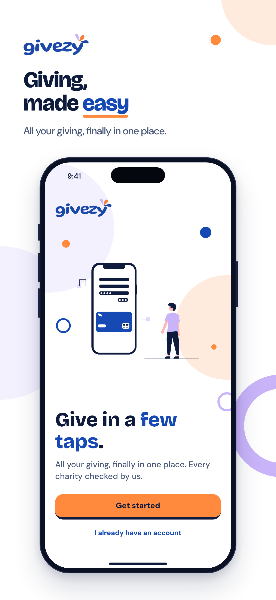
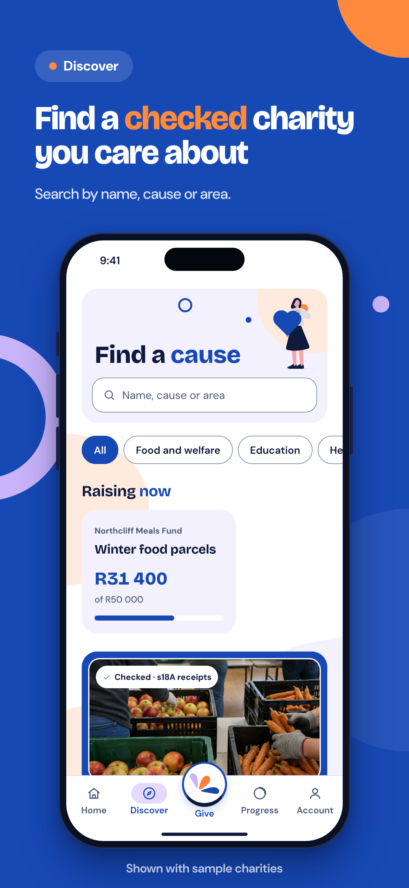
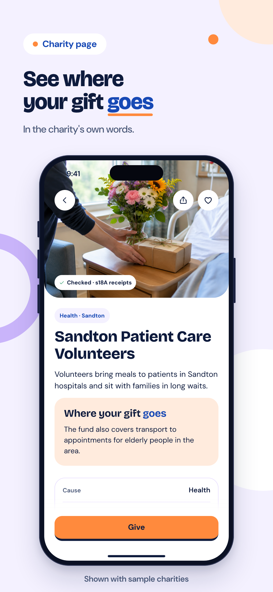
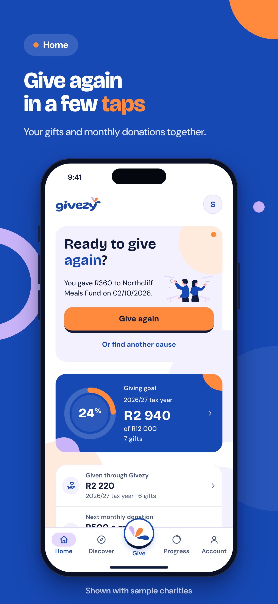
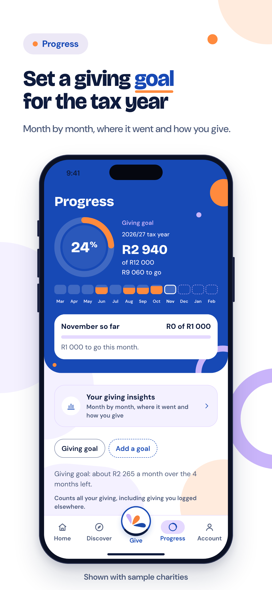
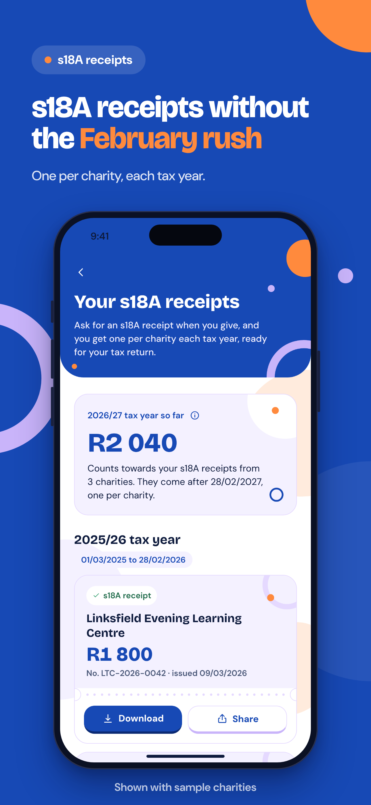
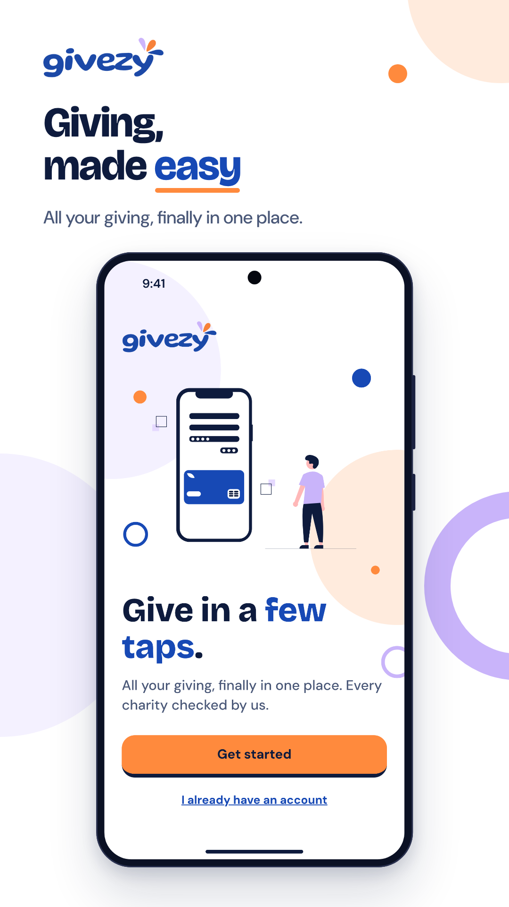
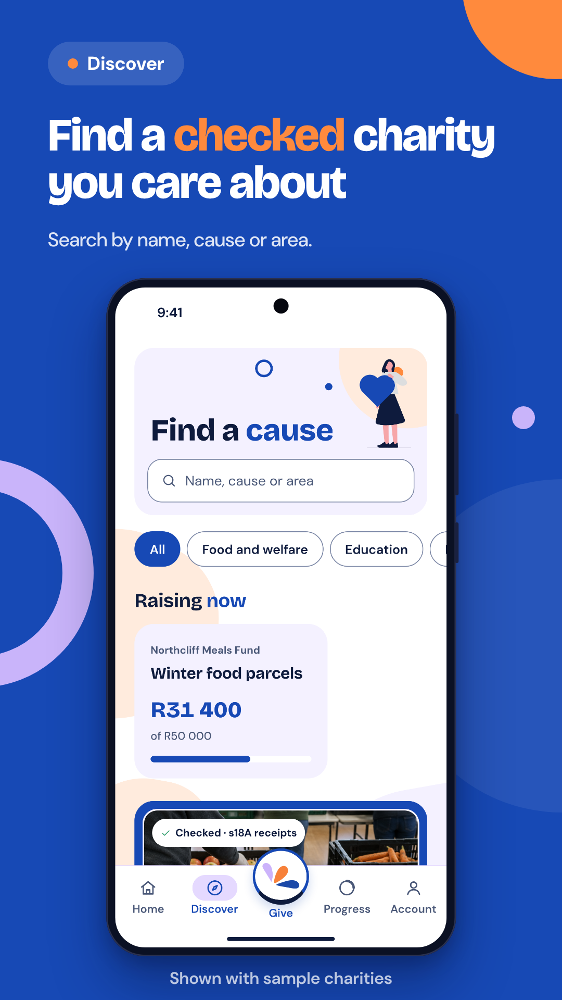
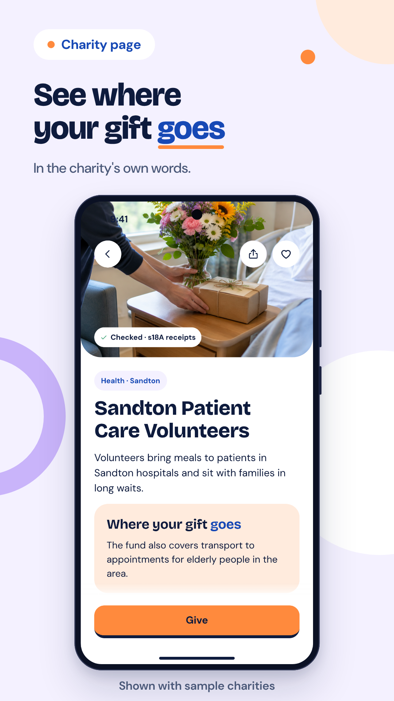
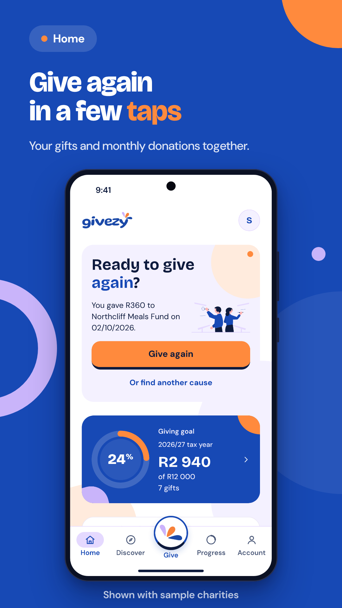
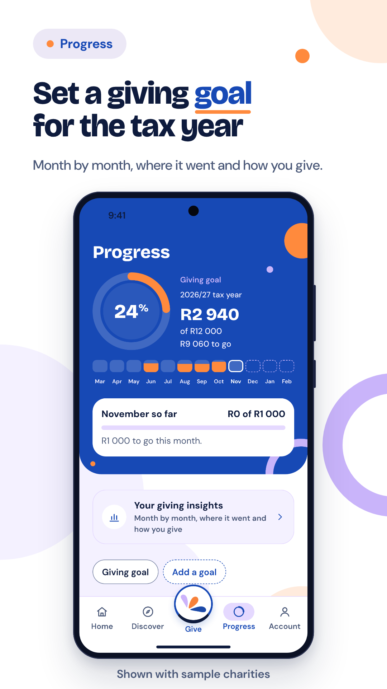
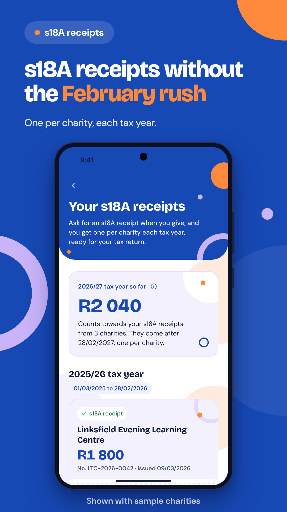
The sample "fresh bread" photo was swapped for a fruit basket in these, in line with the no-religious-imagery rule.
From reading the app's code (22/11/2026), with in-app giving, saved cards and Google/Apple sign-in all off. Apple counts data as collected when it leaves the phone.
| Apple's data type | What it is in Givezy | Used for | Linked to the person |
|---|---|---|---|
| Contact Info: Email Address | Sign-in email; the email on "Ask us to add a charity" | App Functionality | Yes |
| Purchases: Purchase History | Gifts and monthly donations made on the website, shown in the app | App Functionality | Yes |
| Financial Info: Other Financial Info | Giving the person notes they did elsewhere (amount, date, to whom) | App Functionality | Yes |
| User Content: Other User Content | Charity suggestions (name, town, note) | App Functionality | Yes |
| Identifiers: User ID | The account's id | App Functionality | Yes |
| Other Data | Saved charities, and which kind of giver they said they are | App Functionality | Yes |
Location, contacts, photos, health, browsing history, diagnostics, phone number, ID number, card details. Goals, the income log and causes chosen stay on the phone and are never sent.
App updates come through Expo, which sends a random install id with each update check. Expo's own privacy notice says it collects no data and does no tracking, so it's left out above. Worth a second look before submitting.
| Question | Answer |
|---|---|
| Does the app collect or share any of the required data types? | Yes, it collects. It shares nothing (our database and hosting providers work for us, which Google doesn't count as sharing). |
| Is all data encrypted in transit? | Yes. The app only makes https connections. |
| Can people ask for their data to be deleted? | Yes: in the app (Account, Your information, Delete my account) and at https://givezy.co.za/account/data/delete |
| Personal info: Email address | Collected, required. Account management, App functionality. |
| Financial info: Purchase history | Collected, required for an account. App functionality. |
| Financial info: Other financial info | Collected, optional (giving noted from elsewhere). App functionality. |
| App activity: Other user-generated content | Collected, optional (charity suggestions). App functionality. |
| App activity: Other actions | Collected, optional (saved charities, kind of giver). App functionality, Personalisation. |
| Location, contacts, photos, health, messages, device ids, app performance | Not collected. |
Goes in App Review Information, Notes. The reviewer's email still needs filling in.
Givezy is a South African app for donors. It lists registered South African charities (NPOs and PBOs) that Givezy has checked, and keeps a donor's gifts, monthly donations and s18A tax receipts in one account. (An s18A receipt is the receipt South African charities issue under section 18A of the Income Tax Act, so the donor can claim the gift against tax.) The app does not take donations. When a donor taps Give, the charity's donation page opens in Safari on givezy.co.za, where the payment is made on the payment provider's page, in line with guideline 3.2.2(iv). The app is free and has no in-app purchases. Sign-in is by a code sent to the email address; there is no password. Review account: type [reviewer email], tap Send code, then type the code [fixed code]. That code works at any time for this account only. Account deletion: Account, Your information, Delete my account. This opens the deletion page on givezy.co.za for the signed-in account. Charity updates and videos are posted only by charities Givezy has checked; Givezy can suspend any charity. Questions or reports go to hello@givezy.co.za.
Apple's rules (3.2.1(vi) and 3.2.2(iv)) allow donations inside a third-party app only for charities Apple has approved as nonprofits, with Apple Pay offered. Forum answers from Apple are mixed on whether a for-profit platform like Givezy qualifies, so it needs Apple's answer in writing first. Then these change:
Sources: App Review Guidelines, Apple forum: donations for multiple nonprofits, Apple forum: charity app rejected under 3.2.2.